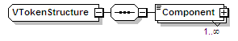
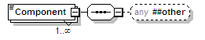

| diagram |  | ||||
| namespace | urn:oasis:names:tc:evs:schema:eml | ||||
| children | Component | ||||
| used by |
|
||||
| source | <xs:complexType name="VTokenStructure"> <xs:sequence> <xs:element name="Component" maxOccurs="unbounded"> <xs:complexType mixed="true"> <xs:sequence> <xs:any namespace="##other" minOccurs="0"/> </xs:sequence> </xs:complexType> </xs:element> </xs:sequence> </xs:complexType> |
| diagram |  | ||||||||||
| namespace | urn:oasis:names:tc:evs:schema:eml | ||||||||||
| properties |
|
||||||||||
| source | <xs:element name="Component" maxOccurs="unbounded"> <xs:complexType mixed="true"> <xs:sequence> <xs:any namespace="##other" minOccurs="0"/> </xs:sequence> </xs:complexType> </xs:element> |